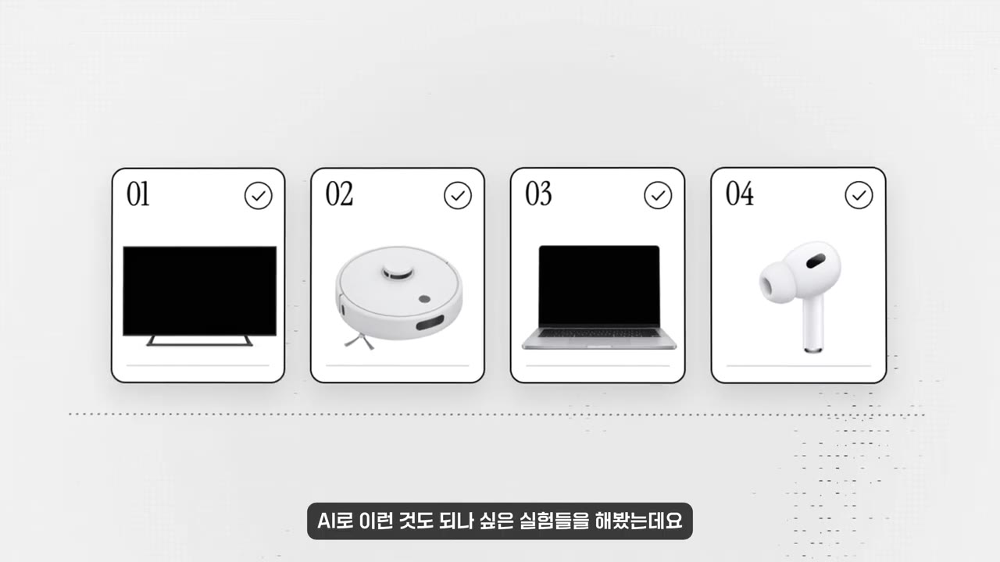
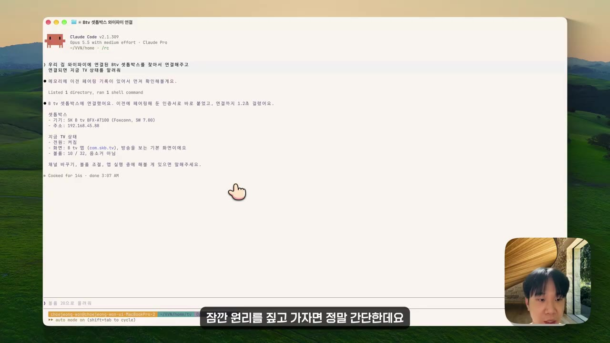
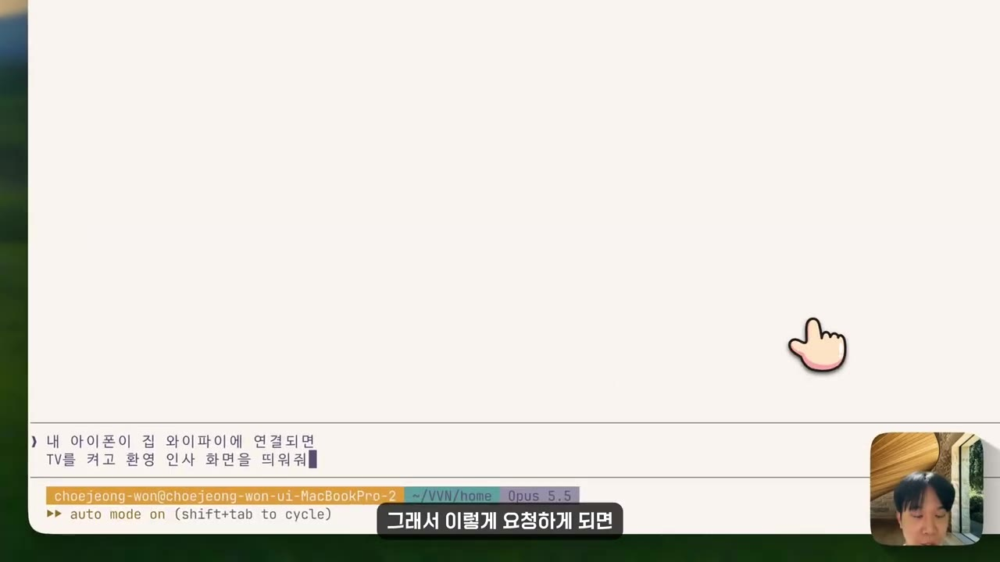
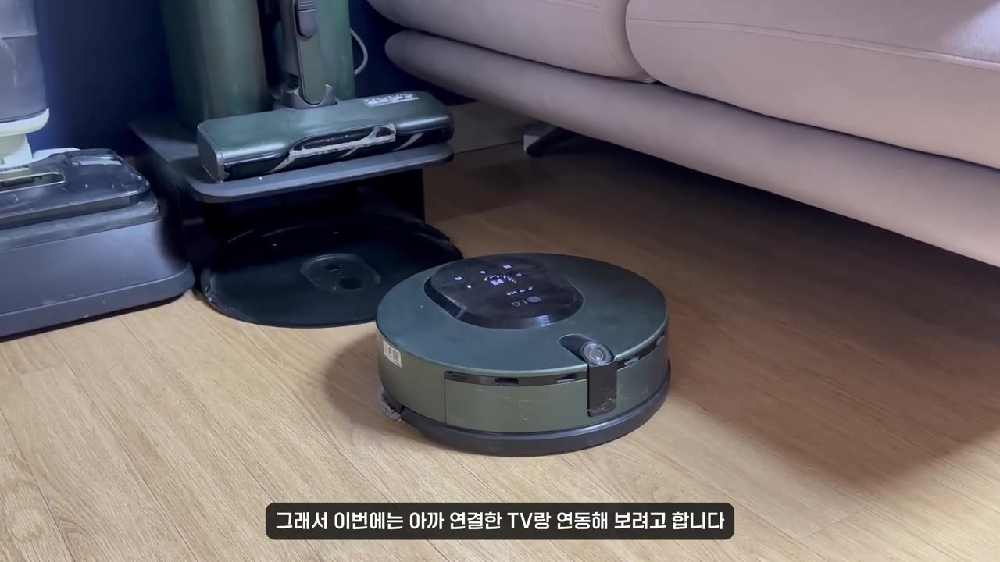
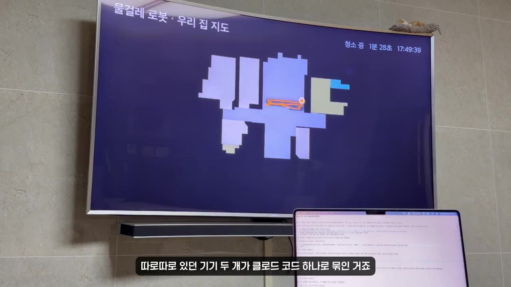
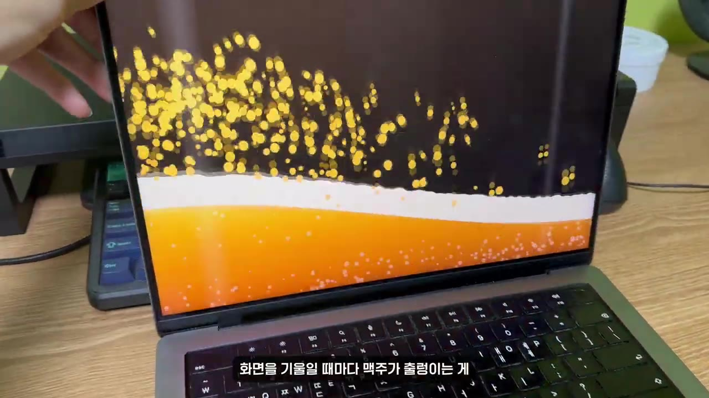
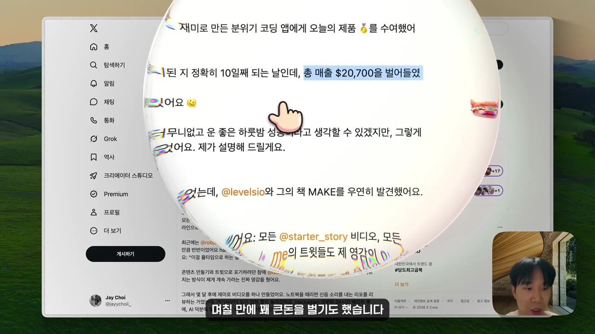

클로드 코드가 우리 집을 해킹했습니다
▶ 원본 영상 보기한눈에 보기
- 이 영상은 Claude Code에게 말로 부탁해서 집 안 기기 네 가지(TV, 로봇청소기, 맥북, 에어팟)를 조종해 본 실험입니다.

- TV와 맥북을 같은 와이파이에 두면 Claude Code가 리모컨 대신 TV를 조작합니다. 귀가 인사, 아침 뉴스 요약 띄우기, 취침 시간 자동 꺼짐 같은 자동화도 할 수 있습니다.
- LG 로봇청소기는 LG 개발자 사이트에서 받은 개인용 토큰으로 연결했습니다. 청소 중인 위치 지도를 TV에 실시간으로 띄워 두 기기를 하나로 묶었습니다.
- 맥북의 화면 각도 센서와 충격 감지 센서, 에어팟의 머리 방향 센서도 꺼내 쓸 수 있습니다. 맥북을 때리면 소리를 지르게 하거나, 고개 짓으로 영상을 조작할 수 있습니다.
- 반드시 내 기기에만 써야 합니다. 올해 초 한 개발자가 자기 로봇청소기를 조종하려다 전 세계 청소기 7,000대에 접근하게 된 일이 있었습니다.
이런 분께 도움이 됩니다
- Claude Code를 코딩 말고 생활에 써 보고 싶은 분
- 안드로이드 기반 TV나 셋톱박스, LG ThinQ 가전, 맥북, 에어팟을 갖고 있고 '내 집 자동화'를 실험해 보고 싶은 분
핵심 내용
기본 원리: 같은 와이파이 안이면 명령을 주고받을 수 있다
- 맥북과 TV가 같은 와이파이에 있으면 서로 명령을 주고받을 수 있습니다. 그래서 맥북에서 돌아가는 Claude Code가 사람 대신 TV를 조작할 수 있습니다. (0:55)
- 시작은 X(옛 트위터)에서 본 글이었습니다. TV 모델명 하나만 알려 줬더니 Claude Code가 와이파이에서 TV를 찾아내 광고와 필요 없는 앱을 모두 지웠다는 내용입니다. (0:00)
- 영상에서 쓴 기기는 SK BTV 셋톱박스입니다. 안드로이드 기반이라 같은 방식이 통합니다.
💡 집 기기들은 생각보다 많이 열려 있다. 연결만 되면 그다음은 '언제 무엇을 할지' 말로 정해 주면 된다.
TV: 리모컨 대신 쓰기부터 자동화까지
- 연결이 끝나면 Claude Code가 TV의 현재 상태를 알려 줍니다.

- 간단한 조작(리모컨 기능)도 되지만, 솔직히 이 정도는 리모컨이 더 빠르다고 영상에서도 말합니다.
- 맥북 화면을 TV에 띄우기: 작업하던 화면을 큰 화면에서 그대로 이어서 볼 수 있습니다. (1:20)
- 집에 오면 TV가 인사하기: 아래 흐름으로 움직입니다. (1:35)
🔁 귀가 감지 → TV 인사 자동화
- 휴대폰 와이파이 접속
- 맥북이 귀가 확인
- TV 켜고 인사
- 1휴대폰 와이파이 접속
집에 오면 휴대폰이 자동으로 집 와이파이에 붙습니다.
- 2맥북이 귀가 확인
맥북이 공유기에 연결된 기기 목록을 보고 내가 집에 온 것을 알아챕니다.
- 3TV 켜고 인사
Claude Code가 TV를 켜고 화면에 환영 인사를 띄웁니다.

"내 아이폰이 집 와이파이에 연결되면 TV를 켜고 환영 인사" 요청 입력 · ▶ 1:54
- 같은 방식으로 이런 것도 할 수 있습니다.
- 기상 시간에 TV가 켜지고, Claude가 아침 뉴스를 요약해 화면에 띄우기
- 잘 시간이 되면 TV가 저절로 꺼지기
로봇청소기: 공식 통로(토큰)로 연결하고 TV와 묶기
- 영상에서 쓴 기기는 LG 물걸레 로봇청소기입니다. TV와 달리 제조사가 공식으로 열어 둔 외부 연결 통로를 썼습니다. (2:25)
- LG는 '띵큐(ThinQ)' 앱으로 가전을 관리합니다. LG 개발자 사이트에서 개인용 토큰(본인 확인용 접속 열쇠)을 발급받아 Claude Code에 넘겨 주면 끝입니다.
- 상태 확인과 청소 시작은 띵큐 앱으로도 할 수 있는 기능입니다.

- 차별점은 TV 연동입니다. 로봇이 지금 집 안 어디를 다니는지 지도를 TV에 실시간으로 띄웁니다. 거실에 앉아서 청소 위치를 바로 볼 수 있습니다. (3:11)

💡 따로 놀던 기기 두 개가 Claude Code 하나로 묶인다. 앱 하나로는 할 수 없던 일이 된다.
- 더 넓혀 볼 수 있는 기기
- LG ThinQ의 에어컨, 세탁기 등은 같은 방법으로 연결할 수 있습니다.
- 삼성, 로보락 같은 다른 스마트 가전도 실험해 볼 수 있다고 합니다.
맥북: 애플이 숨겨 둔 센서 꺼내 쓰기
- 맥북 안에는 애플이 다른 목적으로 넣어 둔 센서가 여럿 있습니다. 센서가 계속 읽는 값을 Claude Code가 받아 원하는 동작으로 이어 줍니다. (4:10)
- 화면 각도 센서: 맥북은 화면이 얼마나 열려 있는지 각도를 정확히 압니다. 이 값으로 화면을 기울일 때마다 화면 속 맥주가 출렁이게 만들었습니다. (4:30)

- 움직임(충격) 감지 센서: 맥북을 때리면 맥북이 소리를 지르게 했습니다. 영상에서 가장 바이럴이 된 기능이라고 소개합니다. (4:44)
- 영상에 따르면, 이 기능을 처음 만든 한 개발자는 며칠 만에 꽤 큰돈을 벌었습니다(금액은 언급 없음).

에어팟: 고개 짓으로 영상 조작
- 에어팟 프로에는 머리 방향을 읽는 센서가 있습니다(자막상 정확한 모델명은 불분명). 원래는 고개를 돌려도 소리가 제자리에서 들리게 하는 공간 음향용입니다. (5:18)
- 이 센서를 영상 조작에 붙였습니다.
| 머리 동작 | 영상 조작 |
|---|---|
| 왼쪽으로 돌리기 | 뒤로 가기 |
| 오른쪽으로 돌리기 | 앞으로 가기 |
| 끄덕이기 | 재생 / 정지 |
- 손을 쓰지 않고 영상을 조작할 수 있어 밥 먹으면서 볼 때 유용하다고 합니다. (5:45)
주의점: 내 기기에만 쓴다
- 영상에 따르면, 올해 초 한 개발자가 자기 로봇청소기를 조종하려다가 전 세계 청소기 7,000대에 접근하게 됐습니다. 제조사 서버에 보안 구멍이 있었기 때문입니다. (3:40)
💡 같은 방법이 남의 기기에도 닿을 수 있다. 반드시 내 기기에만, 항상 조심해서 쓴다.
따라 해보기
준비물
- Claude Code가 설치된 PC(영상은 맥북 사용)
- 조종할 기기와 PC가 같은 와이파이에 연결되어 있을 것(TV의 경우)
- 안드로이드 기반 TV 또는 셋톱박스 / LG ThinQ 가전 + LG 개발자 사이트 계정
- 맥북 센서와 에어팟 기능은 맥북과 에어팟 프로가 필요합니다.
- 비용: 영상에서 따로 언급하지 않았습니다(Claude Code 이용료는 별도).
단계별 방법
🔁 집 기기를 Claude Code에 연결하는 순서
- 같은 와이파이 연결
- TV 연결 요청
- 간단한 조작 확인
- LG 토큰 발급
- 토큰 넘기기
- 기기 연동·자동화
- 1같은 와이파이 연결
TV(셋톱박스)와 PC를 같은 공유기에 연결합니다. (0:55)
- 2TV 연결 요청
Claude Code에 TV 모델명을 알려 주고 TV를 찾아 연결해 달라고 요청합니다. 연결되면 현재 상태가 표시됩니다. (0:46)
- 영상에서는 요청 문장 원문이 화면에만 나오고 자막에는 없습니다.
- 3간단한 조작 확인
켜기/끄기, 화면 띄우기처럼 쉬운 것부터 시켜 봅니다.
- 4LG 토큰 발급
LG 개발자 사이트에서 개인용 토큰을 발급받습니다. (2:30)
- 발급 메뉴 위치는 영상에서 생략됨
- 5토큰 넘기기
발급받은 토큰을 Claude Code에 주고 로봇청소기 상태 확인과 청소 시작을 요청합니다.
- 6기기 연동·자동화
"청소 지도를 TV에 실시간으로", "집에 오면 TV 인사" 처럼 원하는 동작을 말로 정합니다.
따라 할 수 있는지 점검
- ✅ 바로 따라 할 수 있음: 1단계 「같은 와이파이 연결」, 3단계 「간단한 조작 확인」, 6단계의 아이디어 구성
- ⚠️ 2단계 「TV 연결 요청」: 영상은 Claude Code에 보낸 요청 문장을 자막으로 알려 주지 않습니다 → 영상 0:46~1:01 화면에서 프롬프트를 확인하세요. 안드로이드 TV는 보통 TV 설정의 '개발자 옵션'에서 'ADB 디버깅(네트워크)'을 켜야 외부 조작이 됩니다(보충). 셋톱박스에 따라 이 메뉴가 막혀 있을 수 있습니다.
- ⚠️ 4단계 「LG 토큰 발급」: 사이트 주소와 메뉴 위치가 나오지 않습니다 → 'LG ThinQ developer personal access token'으로 검색해 공식 개발자 사이트에서 발급받으세요(보충). 토큰은 비밀번호와 같으니 외부에 노출하지 마세요.
- ⚠️ 맥북 센서와 에어팟 기능: 어떤 프로그램이나 라이브러리를 썼는지, 프롬프트가 무엇인지 영상에 나오지 않습니다 → 영상 4:30, 4:57, 5:30 화면의 요청 문장을 참고해 Claude Code에 같은 요청을 해 보세요. 이 기능은 맥 전용입니다.
- ❓ 귀가 감지에서 '공유기에 연결된 기기 상태'를 어떻게 읽는지(공유기 관리 페이지인지, 네트워크 스캔인지) 영상에서는 설명하지 않습니다.
확인 방법
- TV: Claude Code가 TV 현재 상태를 출력하고, 명령대로 TV가 켜지고 꺼지면 성공입니다.
- 로봇청소기: Claude Code가 청소기 상태를 보여 주고, 청소 시작 명령에 기기가 움직이면 성공입니다.
막히면
- 기기가 안 보이면 PC와 기기가 같은 와이파이(같은 공유기)에 있는지 먼저 확인합니다.
- 남의 기기나 공용 네트워크의 기기에는 절대 시도하지 않습니다. 영상의 7,000대 접근 사례처럼 의도치 않게 남의 기기에 닿을 수 있습니다.
기억할 숫자·인용
- 7,000대: 한 개발자가 자기 로봇청소기를 조종하려다 접근하게 된 전 세계 청소기 수(올해 초, 영상 주장)
- 영상에 쓰인 기기: SK BTV 셋톱박스(안드로이드), LG 물걸레 로봇청소기(ThinQ), 맥북, 에어팟 프로
- "이제는 해보고 싶다는 마음만 있으면 뭐든 시도해 볼 수 있는 시대가 된 것 같습니다." (6:24)
생각해볼 점
- 영상 제목은 '해킹'이지만, 실제 연결 방법은 같은 와이파이 안의 기기 제어와 제조사 공식 토큰이었습니다. 보안을 뚫는 해킹과는 다릅니다. 다만 TV의 광고와 기본 앱을 지우는 일은 기기 보증이나 셋톱박스 약관에 걸릴 수 있으니 확인이 필요합니다(내 의견).
- 집 기기를 AI 에이전트(스스로 판단하며 작업을 대신하는 AI)에 맡기면 편하지만, 토큰과 네트워크 권한을 넘기는 일입니다. 어떤 명령을 실행하는지 확인하면서 쓰는 편이 안전합니다(내 의견).
- '맥북 때리기' 앱으로 며칠 만에 큰돈을 벌었다는 이야기와 7,000대 사례는 영상 속 주장입니다. 구체적인 출처는 영상에 나오지 않습니다.
바로 해볼 일
- 우리 집 TV나 셋톱박스가 안드로이드 기반인지, 개발자 옵션이 열리는지 확인하기
- LG ThinQ 가전이 있다면 LG 개발자 사이트에서 개인용 토큰 발급 메뉴 찾아보기
- Claude Code에 "같은 와이파이에 있는 내 TV를 찾아서 현재 상태를 알려줘"라고 요청해 보기(내 기기에만)